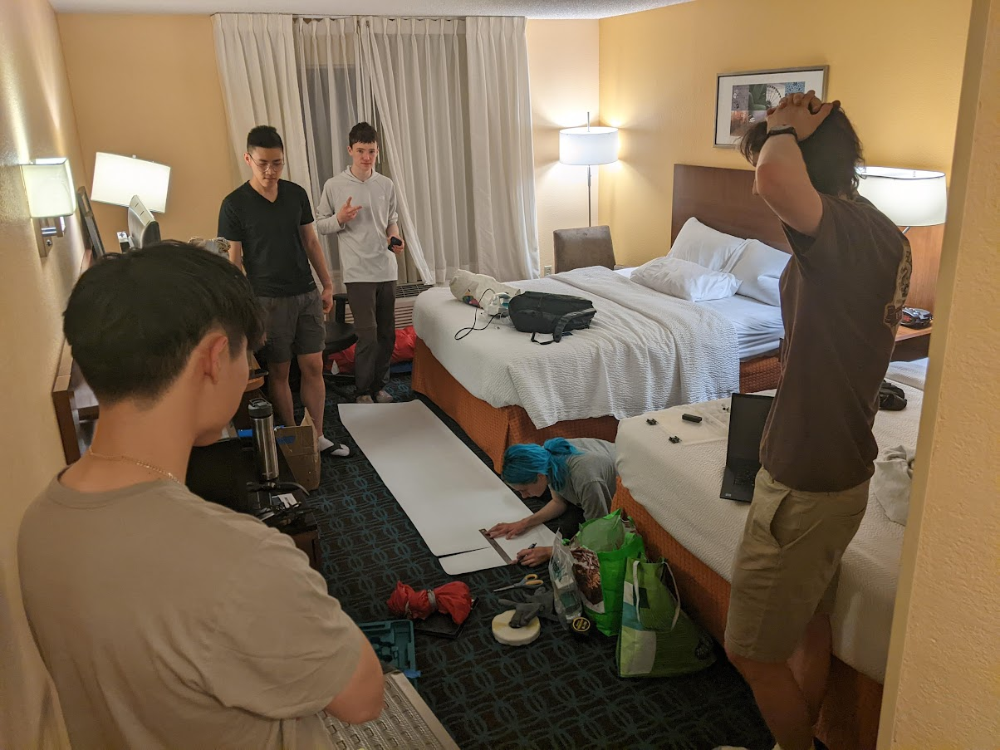
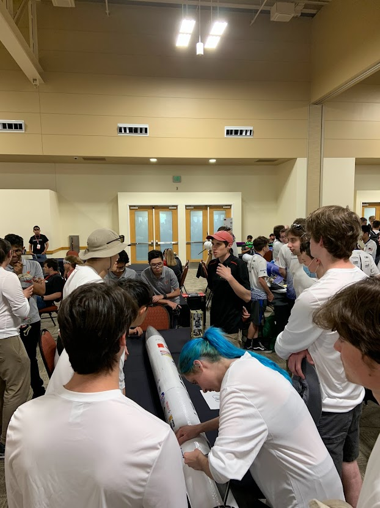
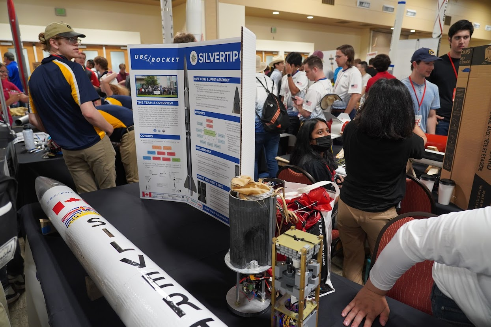
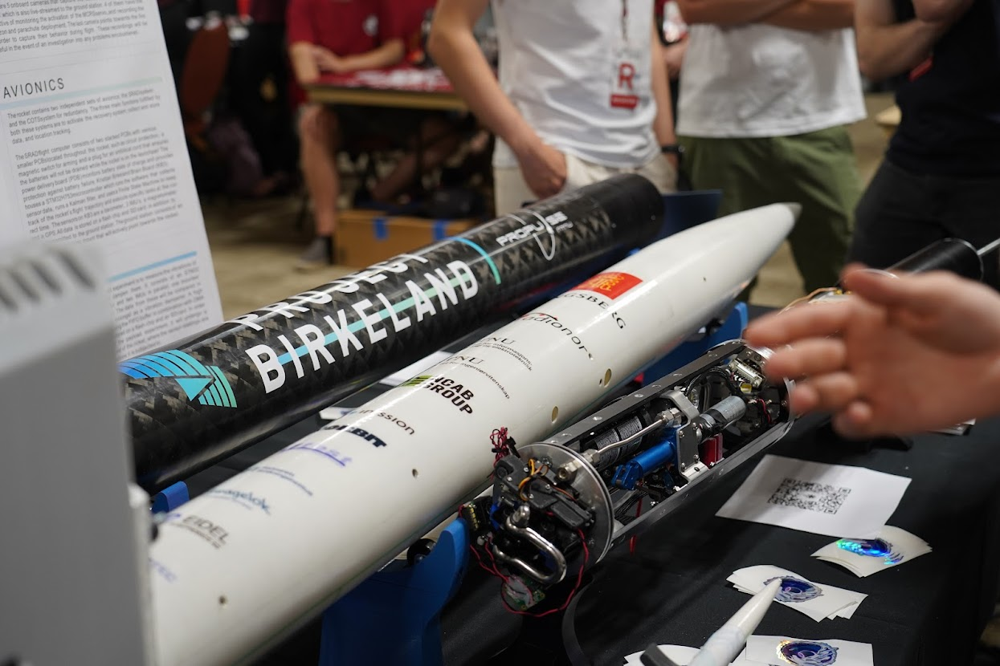
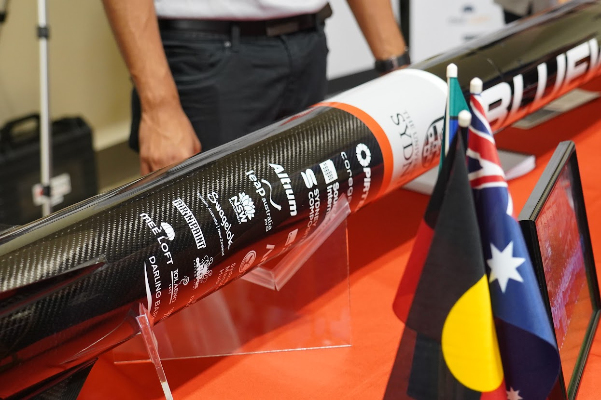
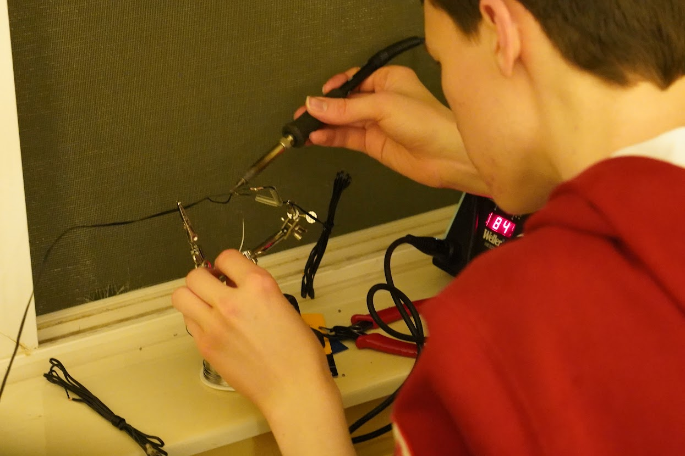
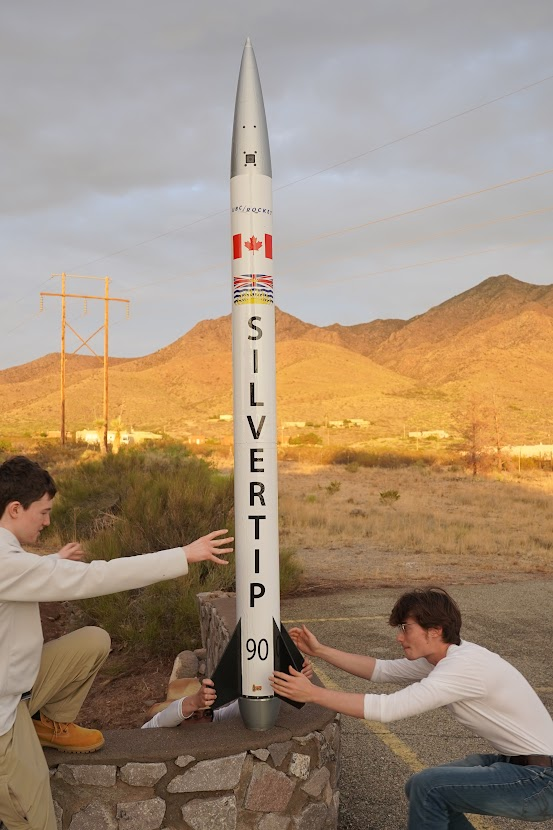
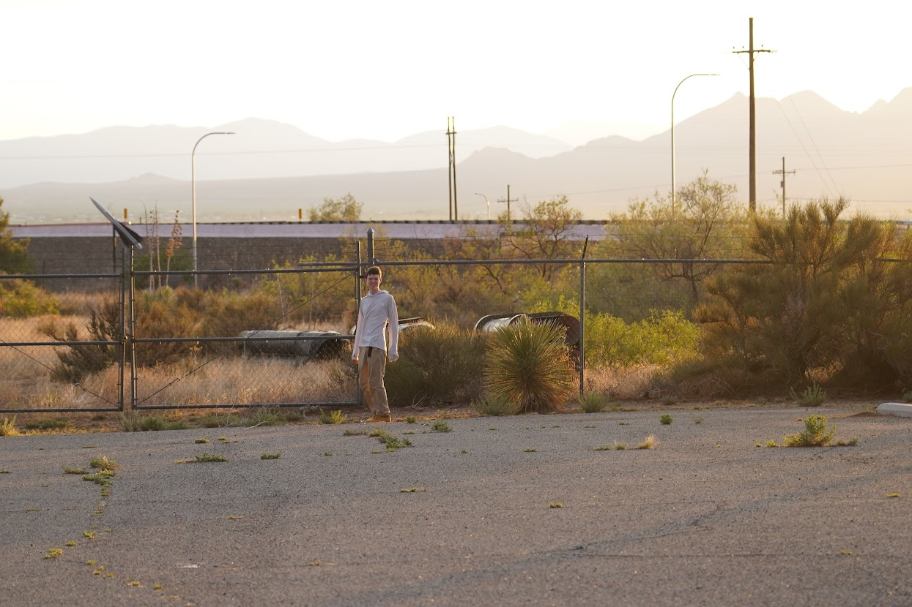
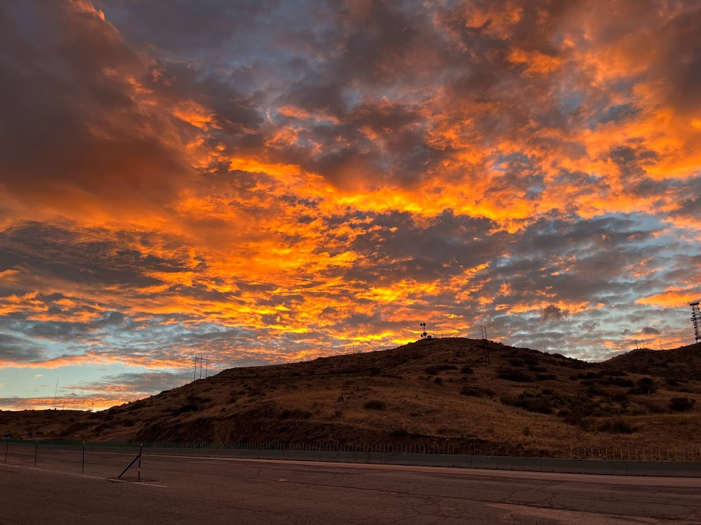
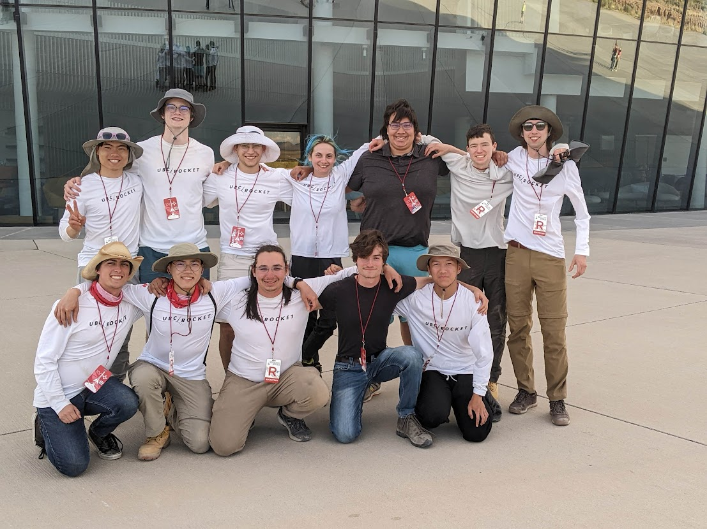

My experience at IREC 2022
Last month, I had the opportunity to go to the 15th Intercollegiate Rocket Engineering Competition (IREC) with my design team, UBC Rocket. We launched the rocket that we have been working on for several months, Silvertip, there and we had a lot of fun!
My journey to the competition started on June 19th, when I woke up at 4 AM to get to my 8 AM flight. Most of the team was driving to the competition, so they had most of the equipment that we needed. I met up with Marco, another avionics team member, at the airport, as we were taking the same flights. We were flying from Vancouver to El Paso via Denver, with the team members who were already there driving us from El Paso to Las Cruces, which was where we were staying for the duration of the competition. The flight was smooth and we got to El Paso at around 4:00 PM local time (which was 3:00 PM from where we were coming from). We got picked up at the airport by the team members who were driving and headed to Las Cruces.
When we got to the hotel, we almost immediately started on the finishing touches. We had to apply a vinyl wrap to the bare rocket to cover up the bare carbon fiber and fiberglass, which took 3 hours, marking the first of many late nights of the week.

The first full day was registration day, which involved a lot of waiting around. We did get the opportunity to start meeting with and talking to other teams at the competition. One of my favourite parts of the whole experience was seeing all the awesome rockets and talking with the people who built them! We also passed our safety inspection, and they seemed particularly pleased with our avionics solution. That evening, we made our team shirts, which we didn't have time to get professionally screen-printed, so we used a Walmart printer, transfer paper, and blank white long-sleeve shirts. That was really fun, because we got to hang out with some people on QRET, the rocket team from Queen's University.

The second full day was conference day. Every single team (except for the ones whos rockets were stuck in transit) had their rockets there along with a poster summarizing their rocket and highlighting special things about it. It was so cool to see all the work that other teams had done! Seeing all the interesting rockets reminded me of going to Maker Faire when I was younger, and gave me a lot of inspiration for what we can do next year.

There were two teams which really stuck out to me: The USYD Rocketry Team (from the University of Sydney), and PropulseNTNU (from the Norwegian University of Science and Technology). USYD was really interesting to me because their rocket had an immaculate glossy carbon fiber finish. That finish had also survived a test launch a few months prior with little to no visible damage, which was astounding! PropulseNTNU's rocket avionics were a work of art. In addition to completely developing an avionics system from the ground up, they developed an amazing groundstation that used a military-grade phased-array antenna from Radionor on a 2-axis pan-and-tilt mount to track the rocket and maintain perfect communication with it throughout its flight!


Overall, the conference ended up being one of my favourite parts of the competition, and I can't wait to present all the new things that we create over the next year at the next IREC conference!
After the conference, some of the team members went to a workshop to integrate the rocket motor (an O3400 motor) with the rocket, while the rest of us went to Walmart to get food and water for the next day. Going out to the desert was a somewhat scary experience, because I was worried about all the possibilities for things that could go wrong. That night, we also packed the parachute, loaded the pyrotechnic charges, and soldered extensions for our e-matches.

After getting only a couple hours of sleep, we got up and got ready to head out to the launch site. As we were driving out however, we received word that the first launch day was cancelled because of rain! I always assumed that the desert was almost completely devoid of rain, but that couldn't be further from the truth. There is actually quite a bit of rain there during some parts of the year, just the total precipitation averages out to be low enough to qualify as a desert. In fact, during this part of the year, there was a late start to monsoon season, so this rain caused the dirt road going to the launch site to be washed out, and it had to be grated to be drivable again. We spent the rest of the day catching up on sleep and making more final preparations, and later in the day we drove around to get some sunset pictures of the rocket for social media. Las Cruces happens to be very close to White Sands Missile Range, which was where a lot of early rocket testing happened for the US Military. As such, there are quite a few places where rocket parts have been brought to in a sort of impromptu display, and we thought it would be neat to go to some of these places while we were taking pictures. Later that night, some other members of the team re-packed the parachute, which they stayed up all night for.




I woke up early again the next day, and I immediately started on an emergency soldering job at 2:30 AM, where we had to extend the length of one of our e-matches. We headed out at 3 AM, and the weather looked good, so we were quite sure that this would be the day that we would launch. We got there at about 4 AM, but the lineup of cars outside the launch area meant that we weren't actually able to start setting up our workspace until 5:30 AM. We started final rocket integration as soon as we had finished setting up. We had quite a bit of trouble with this, because our parachute was taking up more space than we thought it would, and the hot weather made our parts fit tighter than we anticipated. We eventually had to make an energency modification to the avionics bay to make it shorter by cutting down the supporting rods connecting the ends to get it integrated. As this was happening we got to see some rocket launches from other teams! I have never seen an orbital rocket launch, so these were the largest rockets that I've ever seen get launched! Some were more successful than others, but all were very exciting to watch! One rocket that we got to see the launch of the University of Akron's giant 2-stage rocket! Once we had all our team members present, we notified the organizers that we were ready to launch and waited to be called up. The rockets are launched in salvos, where a bunch are set up for about an hour before being launched over about an hour. Our rocket went out to the launch pad close to the end of the day, at around 4 PM, and we all went to the launch observing tent to wait for the launch crew to come back. I set up my ground station to receive the GPS location of the rocket from the GPS transmitters, which had been turned on during integration (they have an 8-hour battery life).
As they were setting up, there were lots of very aggressive clouds moving around, and the wind was picking up. When the launch crew arrived back at base camp, the weather was still OK, so the range safety officers proceeded to launch. Just as they were about to launch the first rocket of the salvo however, clouds rolled in and the wind load got too high to safely launch, dashing our hopes of launching that day. The launch crew headed back out to the launch rail again to safe the rocket and bring it back to the hotel, and I got in the Tesla with some other people and started driving back to the hotel. We were planning on supercharging in an adjacent town, which required us to take a specific road to make sure we got there with enough battery. However when we got there the road was completely flooded, and there was no chance that we would be able to take it. Faced with the possibility of running out of battery, we called the spaceport, and they were gracious enough to let us trickle-charge at the spaceport until we had enough battery to make it back to the hotel. It was such an amazing random experience that we never would have had if we hadn't been stuck in this situation! We got to know all the security and firefighting personnel at the spaceport, we heard about the coolest things that they had seen while working there (such as the USAF Thunderbirds aerobatics team using the spaceport to practice), we heard about all the weird wildlife and weather in New Mexico, they fed us dinner, and they let us stay until 11 PM! They were very interested to hear about life in Canada and what we thought of New Mexico so far. It was an amazing time!
We had a late start the next morning, so we weren't able to get out to the launch site until about 3 PM. We had passed our pre-flight inspection the day before, so we were able to get in line to set up the rocket almost immediately. This time the weather was looking much better. When it finally got down to our rocket, I could barely contain my excitement. They counted down to zero, and after six excruciatingly long seconds we finally saw our rocket streak up into the sky, leaving a stunningly straight vapour trail in its path. There are videos taken by us when we launch where you can hear us screaming with excitement. We lost it in the clouds for a minute but when it had come out of the clouds, we saw that its drogue parachute was deployed, and I could tell from the telemetry that it was descending slowly, which was amazing, because it meant that the avionics had worked, validating our hard work. The firefighters who we had dinner with and who rescued our team member came by the observation tent to congratulate us on a successful launch. By the time we could go out to the range for recovery, it was getting late, so we weren't able to go out and make it back on time.
The recovery team (which I was in) got up the next morning to go out to the range as early as possible. We ended up hiking about 3 km each way through the desert to recover the rocket. We had to bring lots of water to make sure we didn't get dehydrated, we had to use steel-toed boots to protect our feet from cactus needles (we had to get the boots at Walmart), and we had to be dressed head-to-toe in sun protective gear. It was our first real experience being in the desert, because we were pretty far away from base camp. We saw lots of cool things, like cactuses, tarantulas (which are not actually very scary), giant anthills, and parachutes from old rockets. It really made me realize that the desert is strikingly beautiful and is teeming with life. When we got to the rocket, we learned that while our launch was beautiful, our recovery was not. The kevlar shock cord connecting the nosecone and the main body tube had snapped at about 2500 feet above ground level, and while the parachute remained attached to the nosecone (which carried our payload), the main body tube had fallen down to the ground, with top section of the main body tube cutting into the bottom section, and crushing the avionics bay, causing a LiPo battery fire that was thankfully contained by the body tube and the plates on either end of the avionics bay. We brought the rocket back to base camp, defused the remaining pyrotechnic charges, and presented the saved data that we acquired from telemetry to the judges. We then started going back to the hotel. On our way we realized that for our next rocket, Tantalus, we needed 4 flight computers (2 for each stage), and the ones that were destroyed were the ones we were planning on using. This meant that we were going to have to design and build our own flight computers, so I started thinking about what we should do for that. After getting back to the hotel, we cut apart the rocket to transport it back to Vancouver and packed up before going to dinner at a restaurant that the team traditionally goes to after a launch. After dinner, we went to the closing ceremony. They gave out some awards, as well as some joke awards (we got the "Lost and found award"). We didn't get the full results of the competition, because they were still compiling them. After that, everyone who was flying back to Vancouver was dropped off at the hotel, we said goodbye to one another, and the people who were driving started the long road back to Vancouver.
The next morning, we were able to get our first good nights sleep in several days, and we headed out to El Paso at about 10 AM. Marco's flight to Denver was 2 hours earlier than mine, but we had the same flight from Denver to Vancouver, so I had to wait a bit longer. When I was at the El Paso airport, I saw NASA's Super Guppy cargo transporting plane! After worrying that my flight might be delayed so much that I'd miss my connecting flight, we flew to Denver and arrived with time to spare for my connecting flight to Vancouver. I met up with Marco again and then we flew back to Vancouver to finally end our trip.
This was such an amazing trip to go on, and it really inspired me to push the limits of our next avionics design. I can barely wait until IREC 2023!
